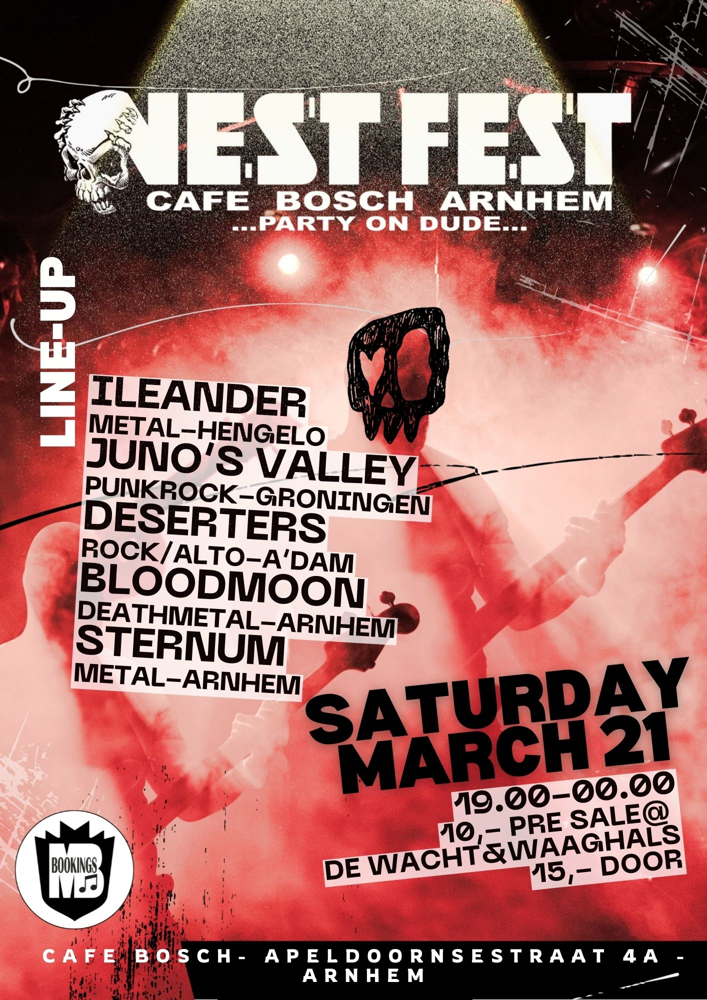
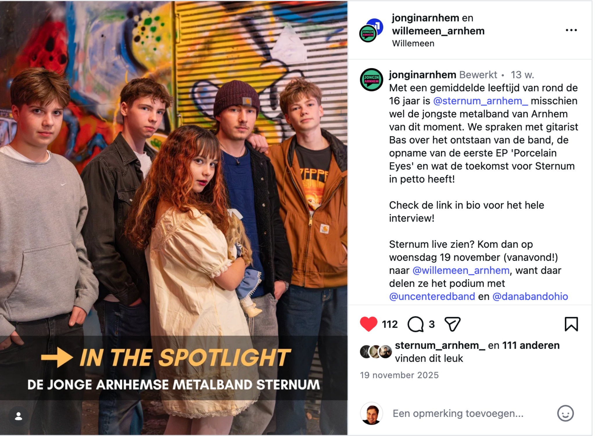

Stijn de Wit — Gitaar
Rock/alternative gitaar • Focus op timing, expressie en samenspel.
Deltion — Artiest/Muzikant
Velp / Arnhem

Video’s
Porcelain Eyes — Sternum (Officiële videoclip)
Porcelain Eyes — Sternum (Live)
Solo uit The Boy I'll Forever Love — Sternum
Solostuk — Studio 26
Optredens

Willemeen — 4 februari
Sternum + Blackout + Mokrypse
Sternum + Blackout + Mokrypse

Arnhemse Uitnacht — Café Kroon
Sternum + Baardvader (VOL = VOL)
Sternum + Baardvader (VOL = VOL)

Willemeen — 19 november
Sternum + Dana + Uncentered
Sternum + Dana + Uncentered

Nest Fest — Café Bosch (Arnhem)

Jong in Arnhem × Willemeen
In the Spotlight (19 november 2025)
In the Spotlight (19 november 2025)
Vermelding 3voor12 — “Porcelain Eyes”
- Deelname aan Popspot ontwikkeltraject
- EP-opname bij Lil Heaven Studios (Arnhem)
- Muziek op Spotify — Sternum op Spotify
- Recensie Uitnacht.nl: “moddervette ritmesectie met snijdende gitaren. Ondanks hun jonge leeftijd klinkt Sternum volwassen, ambitieus en compromisloos. Met de release van hun eerste EP en een groeiend aantal optredens is Sternum een band om scherp in de gaten te houden.” Uitnacht.nl
Ervaring
- [2025] — [optreden / project] (wat was jouw rol, wat geleerd)
- [2024] — [band / lessen] (frequentie, discipline)
- [2023] — [eerste band/optreden] (mijlpaal)
- Repertoire — [3–6 artiesten/nummers die je speelt]
- Gear — [kort: gitaar/versterker/effecten of zang/setup]
- Rol — [lead/ritme/zang/backing/arrangement]
Waarom Deltion + toekomst
[5–8 regels: waarom deze opleiding, wat je concreet wilt leren, wat je verwacht van coaching/bandwerk/theorie, en waar je over 3–5 jaar wil staan (realistisch: podiumervaring, eigen band, doorstroom, studio/live vaardigheid).]
Contact
Mail: stijndewit112@gmail.com
Instagram/YouTube: [link]